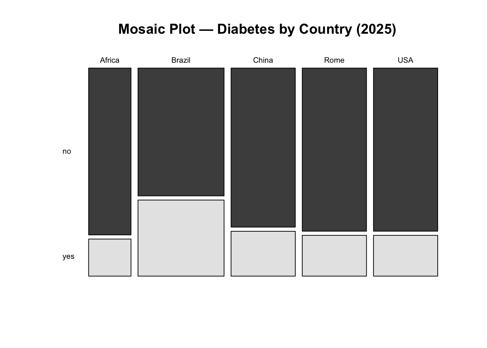

install.packages(c("readxl", "janitor", "tidyverse",
"scales", "crosstable"))From Basics to Advanced Health Analytics: Exploring Diabetes Data
An Exploratory Data Analysis (EDA) Tutorial
Tutorials
EDA
Diabetes
R Ladies Rome
This tutorial demonstrates exploratory data analysis (EDA) techniques on a simulated diabetes dataset for the years 2015 and 2025, covering data import, pre-processing, visualization, summary statistics, prevalence calculation, and statistical inference.
Overview
In this session, we perform an exploratory data analysis on a simulated diabetes dataset for 2015 and 2025. The dataset used in this tutorial is simulated, this means that the 2015 and 2025 data are not real patient records and are not drawn from GBD estimates or surveillance systems. Instead, they consist of synthetic data designed to resemble realistic diabetes patterns over time, including changes in prevalence, laboratory measurements, and population structure.
The use of simulated data allows the analysis to focus on methodology, workflow, and interpretation, without privacy constraints or data access limitations. All results should therefore be interpreted as illustrative examples of analytical techniques rather than as epidemiological estimates.
To explore how diabetes prevalence and characteristics vary over time and across populations, in this tutorial we will cover:
- Data Import
- Pre-processing
- Exploratory Data Visualization (EDA)
- Summary Statistics
- Prevalence Calculation
- Qualitative Statistical Inference
Why Diabetes?
Diabetes is a chronic health condition that affects how the body turns food into energy (blood glucose). It includes Type 1, Type 2, and gestational diabetes. The dataset used in this analysis contains information on individuals’ diabetes status, laboratory measurements (such as HbA1c levels), demographic information (age, sex, country), and other health-related variables.
At the population level, diabetes is a major contributor to illness (morbidity) and premature death (mortality). Classified as a non-communicable disease (NCD), it is associated with various complications, including cardiovascular disease, kidney failure, and neuropathy.
Research in Context
The Global Burden of Disease (GBD) study often identifies diabetes as a key driver of global health loss. According to GBD 2023 estimates, approximately 561 million people were living with diabetes worldwide in 2023, which is roughly \(7\%\) of the world’s population (561 million out of \(~8\) billion).1 In the same year, diabetes accounted for about 90.2 million disability-adjusted life years (DALYs) globally, representing approximately \(3.2\%\) of total global DALYs. Diabetes also contributed substantially to non-fatal health loss, with an estimated 44.2 million years lived with disability (YLDs) in 2023, representing about \(4.5\%\) of all global YLDs.2
From an analytical perspective, diabetes is commonly studied using measures such as prevalence rates, risk factors, and associations with other health conditions. Typical statistical tools include descriptive statistics, hypothesis testing (e.g., chi-square tests for categorical variables) for group comparisons, and exploratory methods such as clustering, regression analysis, and, in some settings, survival analysis.
Research Questions
To focus the analysis, we begin by defining the research questions addressed in this tutorial:
- Has the prevalence of diabetes changed significantly between 2015 and 2025?
- Does the prevalence of diabetes differ significantly between countries in the year 2025?
Packages
Before we start, we load a small set of packages.
Install Required Packages
Load Required Libraries
Data Import
Data are stored in one Excel file with two sheets: one for 2015 and one for 2025. We read each sheet into R and clean the column names so they are consistent and easy to type.
We use the read_excel function from the readxl package to read the data and the clean_names function from the janitor package to clean the column names.
path <- "data/diabetes_study_filled.xlsx"
d2015 <- readxl::read_excel(path,
sheet = "2015") |>
janitor::clean_names()
d2025 <- readxl::read_excel(path,
sheet = "2025") |>
janitor::clean_names()Pre-processing
The pre-processing phase is crucial for ensuring the quality and integrity of the data before conducting any analysis. Data are often messy and may contain inconsistencies, missing values, or irrelevant information that can affect the results of the analysis.
Data Manipulation
Combine data for comparative analyses by year is straightforward, we stack the two datasets into a single table and add a year column. This is data manipulation; we merge the two datasets from 2015 and 2025 into a single dataset, adding a new column to indicate the year of each observation.
In particular, we use the bind_rows function from the dplyr package to stack the two datasets vertically, and the mutate function to create a new column called year.
Data Inspection
The first step is to check the initial structure of the data and identify any missing values. We can use the head function to view the first few rows of the dataset.
# Checking initial structure
head(data_raw)# A tibble: 6 × 9
year country age sex bmi_cat sdi lab_hba1c diabetes_self_report
<dbl> <chr> <dbl> <chr> <chr> <chr> <dbl> <chr>
1 2015 Brazil 42 woman Obesity Interm… 4.9 no
2 2015 Brazil 64 woman Normal weight Interm… 6.1 no
3 2015 Brazil 82 woman Obesity Interm… 4.8 no
4 2015 Brazil 55 woman Normal weight Interm… 6 no
5 2015 Brazil 59 woman Underweight Interm… 5.6 no
6 2015 Brazil 42 men Normal weight Interm… 6.3 no
# ℹ 1 more variable: gestational_diabetes <chr>Then, we perform data inspection with the str or glimpse functions to understand the data types and structure of each variable. Both functions provide a concise summary of the dataset, including the number of observations, variables, and their respective data types.
glimpse(data_raw)Rows: 500
Columns: 9
$ year <dbl> 2015, 2015, 2015, 2015, 2015, 2015, 2015, 2015, 2…
$ country <chr> "Brazil", "Brazil", "Brazil", "Brazil", "Brazil",…
$ age <dbl> 42, 64, 82, 55, 59, 42, 54, 51, 73, 66, 54, 65, 4…
$ sex <chr> "woman", "woman", "woman", "woman", "woman", "men…
$ bmi_cat <chr> "Obesity", "Normal weight", "Obesity", "Normal we…
$ sdi <chr> "Intermediate", "Intermediate", "Intermediate", "…
$ lab_hba1c <dbl> 4.9, 6.1, 4.8, 6.0, 5.6, 6.3, 5.2, 5.8, 6.2, 6.0,…
$ diabetes_self_report <chr> "no", "no", "no", "no", "no", "no", "no", "no", "…
$ gestational_diabetes <chr> "no", "no", "no", "no", "no", "no", "no", "no", "…Handling Missing Values
Next, we check for missing values (NA) with is.na function. This function returns a logical matrix indicating the presence of missing values in the dataset. To count the number of missing values in each column, we can use the colSums function in combination with is.na.
year country age
0 0 0
sex bmi_cat sdi
0 0 0
lab_hba1c diabetes_self_report gestational_diabetes
0 0 0 There aren’t missing values in the dataset, but if there were, we could handle them using various strategies such as imputation, removal, or flagging, depending on the nature and extent of the missing data.
NoteQuestion
How would you handle missing values in a dataset? What strategies would you consider?
Creating Derived Variables
Data are usually not in the exact format needed for analysis. Therefore, we create new variables based on existing ones to facilitate the analysis. We are looking at making comparisons between two years to see how diabetes level changes along the time.
In this case , we create three derived variables:
- Laboratory-defined diabetes (HbA1c ≥ 6.5)
- Total diabetes (self-report OR laboratory, excluding gestational diabetes)
- Age groups (set of age bands to support grouped summaries)
This step involves using the mutate function from the dplyr package to create new columns based on conditions applied to existing columns. And we use the if_else and case_when functions to define the logic for these new variables.
diabetes_data <- data_raw |>
mutate(
diabetes_lab = if_else(lab_hba1c >= 6.5, "yes", "no", missing = NA_character_),
diabetes_total = case_when(
gestational_diabetes == "yes" ~ "no",
diabetes_self_report == "yes" | diabetes_lab == "yes" ~ "yes",
TRUE ~ "no"
),
age_group = case_when(
age < 50 ~ "40–49",
age < 60 ~ "50–59",
TRUE ~ "60+"
)
)Exploratory data Analysis (EDA)
Exploratory Data Analysis (EDA) is a crucial step in understanding the underlying patterns, relationships, and distributions within a dataset. It involves using various statistical and graphical techniques to summarize and visualize the data. EDA helps to identify potential issues, outliers, and trends that may inform subsequent analyses or modelling efforts.
Distribution plot for HbA1c (2015 only)
Let’s visualize the distribution of HbA1c levels for the year 2015 using a histogram combined with a density plot. This will help us understand the spread and central tendency of HbA1c values in that year.
ggplot(data = d2015,
aes(x = lab_hba1c)) +
geom_histogram(aes(y = after_stat(density)),
bins = 30,
fill = "lightblue",
color = "grey70") +
geom_density(color = "darkblue",
linewidth = 1) +
labs(title = "HbA1c Distribution (2015)",
x = "HbA1c (%)",
y = "Density") 
HbA1c distribution in both years
To compare the distribution of HbA1c levels between 2015 and 2025, we can create a density plot that overlays the distributions for both years. This will allow us to visually assess any changes in HbA1c levels over time.
Age distribution by year
To check the age distribution for both years, we can create overlapping histograms. This will help us visualize how the age distribution of the population has changed from 2015 to 2025.
ggplot(data = diabetes_data,
mapping = aes(x = age,
fill = factor(year))) +
geom_histogram(position = "identity",
alpha = 0.5, bins = 30) +
labs(title = "Age Distribution: 2015 vs 2025",
fill = "Year",
x = "Age",
y = "Count")
Age Boxplots
ggplot(diabetes_data,
aes(x = factor(year), y = age,
fill = factor(year))) +
geom_boxplot() +
facet_wrap(~sex) +
labs(title = "Age Distribution by Year",
x = "Year",
y = "Age",
fill = "Year") 
Summary Statistics
Now that we have explored the data visually, we can compute some summary statistics to quantify key characteristics of the dataset, and compare them across the two years.
[,1]
n 500.00
age_mean 56.34
age_sd 11.86
hba1c_mean 5.96
hba1c_sd 0.92The results show the overall mean and standard deviation for age and HbA1c levels across the entire dataset, without stratifying by year.
The mean age is approximately 56 years, with a standard deviation of about 12 years, indicating a middle-aged population with some variability in age. The mean HbA1c level is around \(6.2\%\), with a standard deviation of about \(1.5\%\), suggesting that, on average, the population has HbA1c levels slightly above the normal range (typically \(<5.7\%\) for non-diabetic individuals), with considerable variability.
Comparisons by Year
To compare these statistics by year, we can use the group_by function to group the data by the year variable before summarising.
# A tibble: 2 × 4
year n age_mean hba1c_mean
<dbl> <int> <dbl> <dbl>
1 2015 250 56.7 5.87
2 2025 250 56.0 6.05Or, with the table() function we can create a contingency table showing the distribution of diabetes status across the two years.
table_diabetes_year <- table(diabetes_data$year,
diabetes_data$diabetes_total)
table_diabetes_year
no yes
2015 212 38
2025 188 62Prevalence Calculation
To calculate the prevalence of diabetes for each year, we can use the group_by and summarise functions to compute the mean of the binary indicator for diabetes status.
# A tibble: 4 × 4
# Groups: year [2]
year diabetes_total n prop
<dbl> <chr> <int> <dbl>
1 2015 no 212 0.848
2 2015 yes 38 0.152
3 2025 no 188 0.752
4 2025 yes 62 0.248# A tibble: 2 × 2
year prev_diabetes
<dbl> <dbl>
1 2015 0.152
2 2025 0.248Prevalence Table with Confidence Intervals
To calculate prevalence with confidence intervals, we can use the prop.test function within a custom summarise operation.
# A tibble: 2 × 6
year n cases prev ci_lower ci_upper
<dbl> <int> <int> <dbl> <dbl> <dbl>
1 2015 250 38 0.152 0.111 0.204
2 2025 250 62 0.248 0.197 0.307Visualize diabetes prevalence by year
To visualize diabetes prevalence by year, we can create a bar plot using the ggplot2 package. This plot will show the proportion of individuals with diabetes for each year.
ggplot(prev_ci,
aes(x = factor(year),
y = prev,
fill = factor(year))) +
geom_col() +
geom_errorbar(aes(ymin = ci_lower,
ymax = ci_upper),
width = 0.2) +
scale_y_continuous(labels = scales::percent) +
labs(title = "Diabetes Prevalence by Year",
x = "Year",
y = "Prevalence (%)",
fill = "Year")
Interaction
To explore the interaction between gender, age, and diabetes status, we can create a faceted bar plot. This plot will show the distribution of diabetes status across different age groups, separated by gender.
ggplot(diabetes_data,
aes(x = age_group,
fill = diabetes_total)) +
geom_bar(position = "fill") +
scale_y_continuous(labels = scales::percent) +
labs(title = "Diabetes Status by Age Group and Gender",
x = "Age Group",
y = "Proportion",
fill = "Diabetes Status") +
facet_wrap(~sex)
Interaction between gender, age and diabetes
ggplot(diabetes_data,
aes(x = diabetes_total, y = age,
fill = sex)) +
geom_boxplot(alpha = 0.6,
outlier.color = "gray40") +
labs(title = "Age Distribution by Diabetes Status and Gender",
x = "Diabetes",
y = "Age",
fill = "Gender") 
Qualitative Statistical Inference
To answer our research questions regarding diabetes prevalence, we will use the Chi-Square Test of Independence. This test is appropriate for categorical data and helps us determine whether there is a significant association between two categorical variables.
Question 1: The prevalence of diabetes changed significantly between 2015 and 2025?
Chi-square Test for Year and Diabetes Status
table_year <- table(diabetes_data$year,
diabetes_data$diabetes_total)
table_year
no yes
2015 212 38
2025 188 62chi_year <- chisq.test(table_year)
chi_year
Pearson's Chi-squared test with Yates' continuity correction
data: table_year
X-squared = 6.6125, df = 1, p-value = 0.01013The p-value is below 0.05, so we reject the null hypothesis and conclude that prevalence differs between 2015 and 2025 in this dataset.
chi_year$expected
no yes
2015 200 50
2025 200 50# Standardized Residuals
res_year <- chi_year$stdres
res_year
no yes
2015 2.683282 -2.683282
2025 -2.683282 2.683282Question 2: Will the prevalence of diabetes differ significantly between countries in the year 2025?
Chi-square Test for Country and Diabetes Status in 2025
diabetes_data_2025 <- diabetes_data |> filter(year == 2025)Contingency table for countries and diabetes
tab_2025 <- table(diabetes_data_2025$country,
diabetes_data_2025$diabetes_total)
tab_2025
no yes
Africa 27 6
Brazil 42 25
China 39 11
Rome 40 10
USA 40 10chi_2025 <- chisq.test(tab_2025)
chi_2025
Pearson's Chi-squared test
data: tab_2025
X-squared = 7.8461, df = 4, p-value = 0.09738The p-value is greater than 0.05. Therefore, we fail to reject the null hypothesis and conclude that there is no statistically significant difference in diabetes prevalence between countries in 2025.
chi_2025$expected
no yes
Africa 24.816 8.184
Brazil 50.384 16.616
China 37.600 12.400
Rome 37.600 12.400
USA 37.600 12.400# Standardized Residuals
residuals <- chi_2025$stdres
round(residuals, 2)
no yes
Africa 0.94 -0.94
Brazil -2.77 2.77
China 0.51 -0.51
Rome 0.88 -0.88
USA 0.88 -0.88Identify where the greatest contribution lies
mosaicplot(tab_2025,
main = "Mosaic Plot — Diabetes by Country (2025)",
color = TRUE, las = 1)
NoteInterpretation
Interpretation: We fail to reject the null hypothesis. There is no statistically significant evidence that diabetes prevalence differs between countries in 2025 at the 5% significance level.
Although some countries show larger deviations from expected counts, these differences are not strong enough, overall, to conclude that prevalence differs significantly across countries.
Bonus
Frequency Table for BMI Categories
crosstable(diabetes_data, by = "year",
cols = c("sex","diabetes_total",
"bmi_cat","country","sdi")) %>%
as_flextable() label |
variable |
year |
|
|---|---|---|---|
2015 |
2025 |
||
sex |
men |
125 (50.00%) |
125 (50.00%) |
woman |
125 (50.00%) |
125 (50.00%) |
|
diabetes_total |
no |
212 (53.00%) |
188 (47.00%) |
yes |
38 (38.00%) |
62 (62.00%) |
|
bmi_cat |
Normal weight |
95 (48.22%) |
102 (51.78%) |
Obesity |
56 (54.90%) |
46 (45.10%) |
|
Overweight |
85 (52.15%) |
78 (47.85%) |
|
Underweight |
14 (36.84%) |
24 (63.16%) |
|
country |
Africa |
67 (67.00%) |
33 (33.00%) |
Brazil |
33 (33.00%) |
67 (67.00%) |
|
China |
66 (56.90%) |
50 (43.10%) |
|
Rome |
34 (40.48%) |
50 (59.52%) |
|
USA |
50 (50.00%) |
50 (50.00%) |
|
sdi |
High |
100 (50.00%) |
100 (50.00%) |
Intermediate |
100 (50.00%) |
100 (50.00%) |
|
Low |
50 (50.00%) |
50 (50.00%) |
|
BMI Categories by Year
The distribution of BMI categories by year can be examined using counts and proportions.
# A tibble: 8 × 4
# Groups: year [2]
year bmi_cat n prop
<dbl> <chr> <int> <dbl>
1 2015 Normal weight 95 0.38
2 2015 Obesity 56 0.224
3 2015 Overweight 85 0.34
4 2015 Underweight 14 0.056
5 2025 Normal weight 102 0.408
6 2025 Obesity 46 0.184
7 2025 Overweight 78 0.312
8 2025 Underweight 24 0.096Visualizing BMI Categories by Year

Proportional Distribution of BMI Categories by Year

Footnotes
Global, regional, and national cascades of diabetes care, 2000–23: a systematic review and modelling analysis using findings from the Global Burden of Disease Study, Stafford, Lauryn K et al. The Lancet Diabetes & Endocrinology, Volume 13, Issue 11, 924 - 934 (https://doi.org/10.1016/S2213-8587(25)00217-7)↩︎
Burden of 375 diseases and injuries, risk-attributable burden of 88 risk factors, and healthy life expectancy in 204 countries and territories, including 660 subnational locations, 1990–2023: a systematic analysis for the Global Burden of Disease Study 2023 Hay, Simon I et al. The Lancet, Volume 406, Issue 10513, 1873 - 1922 (https://doi.org/10.1016/S0140-6736(25)01637-X)↩︎